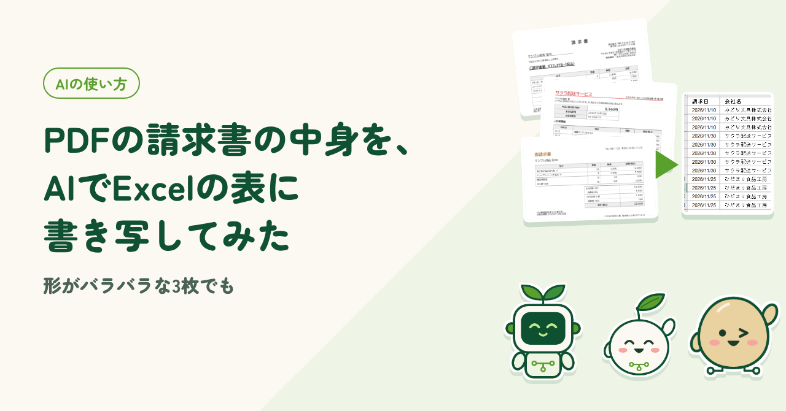
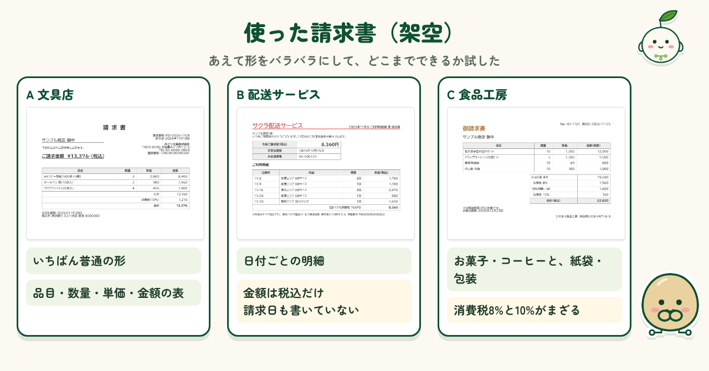
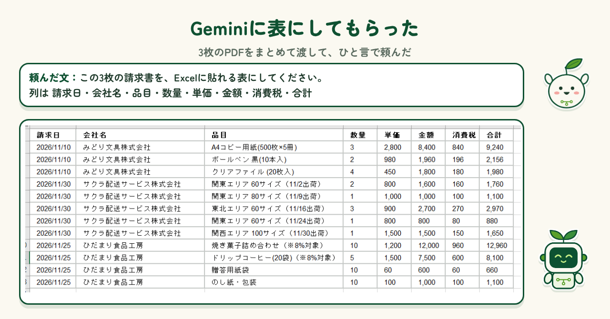
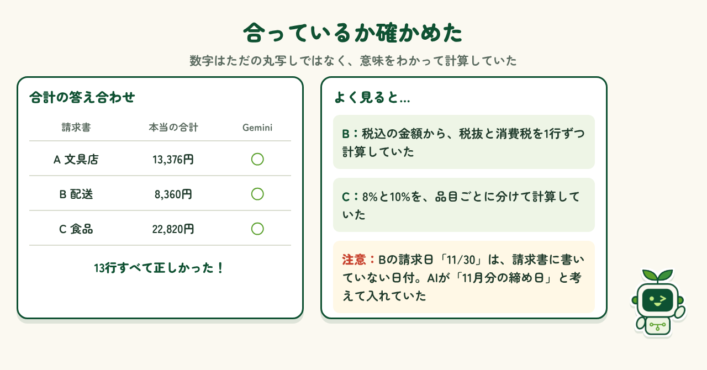
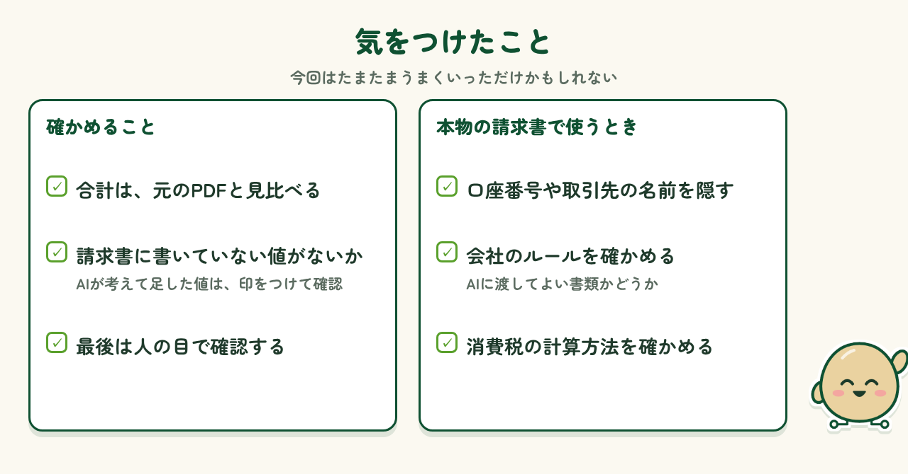

はじめに
取引先から届く請求書が、PDFになっていることが増えました。日付や会社名、金額を、毎月Excelに手で打ち込んでいる人も多いと思います。PDFからの文字の転記、面倒ですよね。そこで今回は、PDFの請求書をAIに渡して、Excelに貼れる表にしてもらいました。使ったのはGeminiです。
使った請求書
試すために、架空の請求書を3枚用意しました。1枚目は文具店の、いちばん普通の形の請求書です。2枚目は配送サービスの明細で、金額は税込だけ、請求日も書いていません。3枚目は食品工房のもので、消費税8%と10%の品目がまざっています。あえてバラバラなフォーマットにして、AIがどこまでできるか試しました。

Geminiに表にしてもらった
3枚のPDFをまとめて渡し、「この3枚の請求書を、Excelに貼れる表にしてください」と頼みました。列は、請求日、会社名、品目、数量、単価、金額、消費税、合計の8つです。すると、3枚の中身が1つの表にきれいに並びました。Excelに貼るだけで、理想的な表のできあがりです。こういう整理は、AIはとても上手だと思います。

合っているか確かめた
表の数字を、元の請求書と見比べてみました。結果は13行すべて正しく、3枚とも合計が合っていました。税込しか書いていない配送の明細は、税抜と消費税を1行ずつ計算し、8%と10%がまざる請求書は、品目ごとに分けて計算しています。ただ丸写しするのではなく、数字の意味をきちんと理解している様子が見えます。ただし、書いていない請求日は、AIが「11月分の締め日」と考えて入れていました。

気をつけたこと
とはいえ、今回はたまたまうまくいっただけかもしれません。合計は元のPDFと見比べること、請求書に書いていない値が入っていないかを見ることが大切です。本物の請求書を使うときは、口座番号や取引先の名前を隠し、会社のルールでAIに渡してよい書類かどうかも確かめましょう。最終的には、人の目で確認することが欠かせません。

まとめ
形がバラバラな請求書でも、AIはひと言の頼み方で、Excelに貼れる表にしてくれました。消費税の計算まで、きちんとこなしてくれたのは驚きです。毎月の転記作業が、ぐっと楽になりそうです。ただし、AIは書いていないことを補うこともあるので、最後のチェックは自分の目で。うまく分担して、面倒な作業を減らしていきたいと思います。
制作メモ
段落の構成と文章の下書きはAI（Claude）と作り、各段落に自分の感想を入れて、1段落ずつ確認・修正しました。図もAIと一緒に作っています。